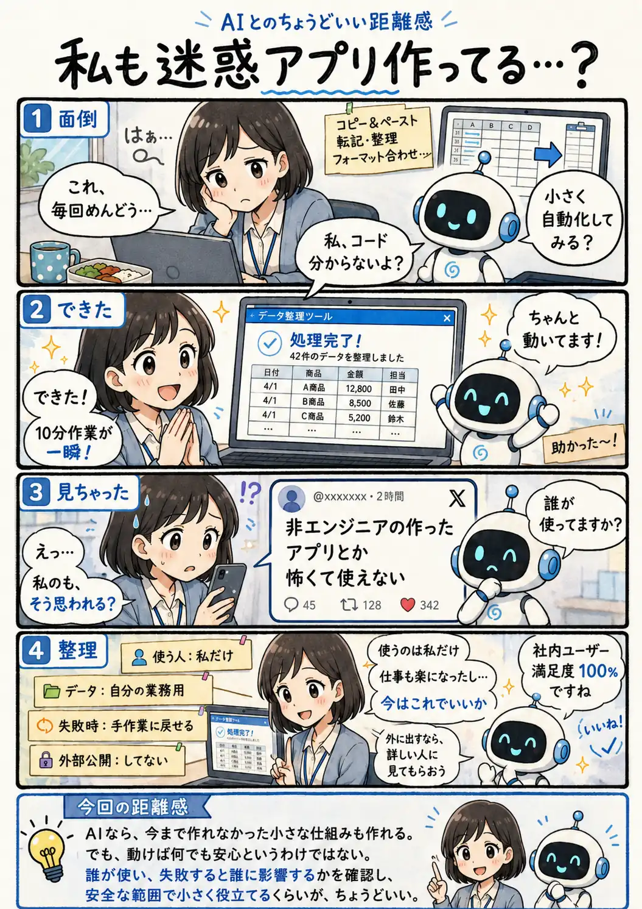

#077
私も迷惑アプリ作ってる…？
使っているのも、助かっているのも、私です。

メモ
AIのおかげで、専門知識がなければ難しかった小さな仕組みも作りやすくなりました。一方で、動くものができたことと、どこでも安全に使えることは同じではありません。
自分だけで使うのか、他の人にも配るのか。失敗しても元に戻せるのか、大切な情報を扱うのか。影響範囲によって、必要な確認は変わります。
まずは小さく役立て、外へ広げる時には詳しい人にも見てもらう。作ることを怖がりすぎず、範囲に合わせて慎重さを増やしていけば大丈夫です。
今回の距離感
AIなら、今まで作れなかった小さな仕組みも作れる。でも、動けば何でも安心というわけではない。誰が使い、失敗すると誰に影響するかを確認し、安全な範囲で小さく役立てるくらいが、ちょうどいい。